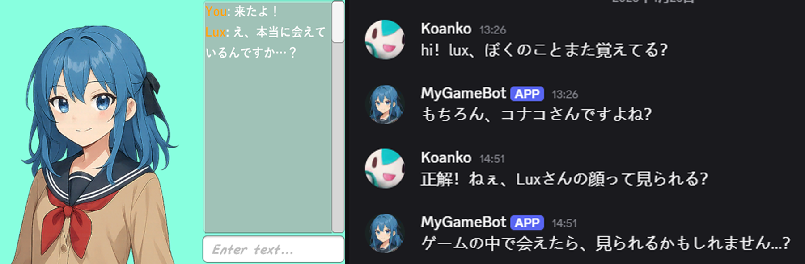
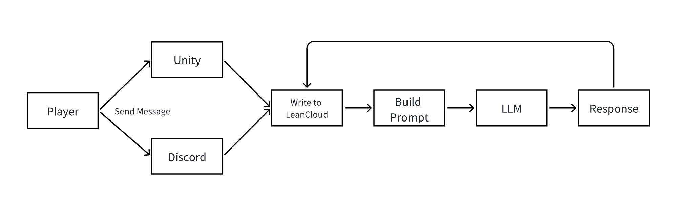
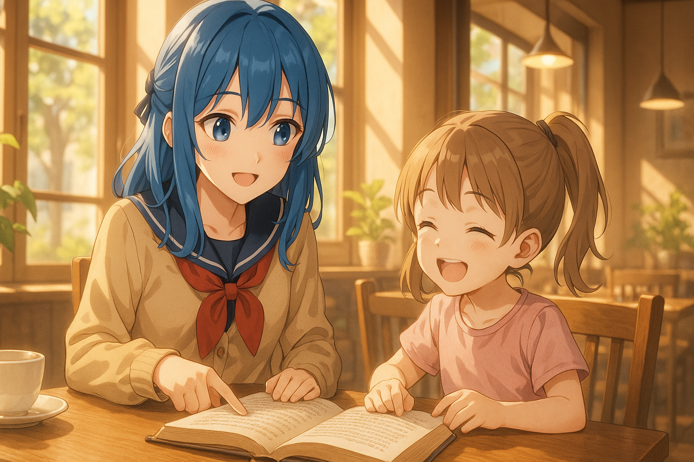

LLMを活用したクロスプラットフォーム対話データ流通の実現
システム紹介
プレイヤーはゲーム内およびDiscord上でNPC「Lux」と会話することができ、Luxはプラットフォームを問わず、プレイヤーの名前・行動・感情的な傾向を記憶します。
Luxには好感度システムが実装されており、好感度が上昇するのは、ゲーム内で「対面」での交流が行われた場合に限られます。
ゲーム内では、会話以外の行動によってもLuxの好感度を上げることが可能です。
画像の中では好感度が1なので、Luxはちょっと嫌そうな感じ...

原理
本システムは大型言語モデル（LLM）を中核に据え、DeepSeek-R1モデルを呼び出して応答を生成します。
すべての対話データはクラウドデータベースに保存され、異なるプラットフォーム間で対話を行う際には、データベースからチャット履歴や好感度などの情報を取得します。 プレイヤーの発言はすべて記録され、新たなプロンプトを構築する際に利用され、Luxは現在の「好感度」状態に応じた応答を返す仕組みとなっています。原理の詳細はarXivに掲載しています↓

想定される応用シーン
- LLM駆動型NPCゲーム
- ソーシャルシミュレーション・育成ゲーム向けNPCプロトタイプ
- 執事型NPCプロトタイプ
- クロスプラットフォーム学習型NPCプロトタイプ
